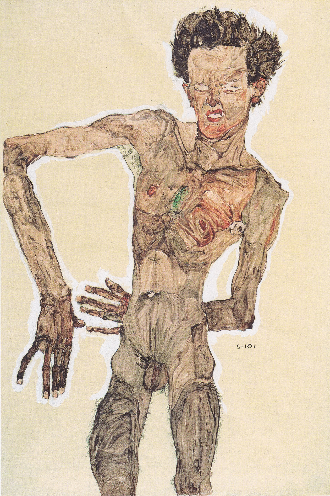
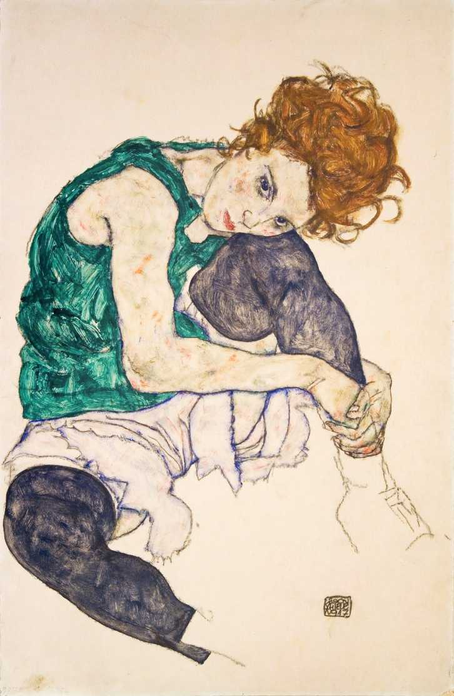

Autorretrato nu
ARTISTA EM DESTAQUE
Linhas que revelam emoções
Egon Schiele (1890–1918) foi um artista austríaco conhecido por retratos e autorretratos intensos. Suas figuras têm contornos marcados, poses pouco convencionais e expressões que parecem revelar conflitos internos. Embora tenha vivido apenas 28 anos, produziu uma obra influente na arte moderna.
Ver outras obras ↓.jpg)
Retrato de Wally
Obra em destaque
LEITURA DA OBRA
Neste autorretrato, o artista usa linhas firmes, postura expressiva e cores contrastantes. A planta physalis acrescenta um detalhe simbólico e decorativo. A imagem não busca uma aparência perfeita: ela transmite personalidade e estado emocional.
CONHEÇA QUEM CRIOU
Egon Schiele (1890–1918) foi um artista austríaco conhecido por retratos e autorretratos intensos. Suas figuras têm contornos marcados, poses pouco convencionais e expressões que parecem revelar conflitos internos. Embora tenha vivido apenas 28 anos, produziu uma obra influente na arte moderna.
.jpg)
MAIS PARA EXPLORAR

Autorretrato nu
.jpg)
A morte e a donzela

Mulher sentada